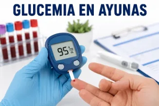

Glucemia en ayunas
Examen que mide la concentración de glucosa en sangre tras un ayuno de 8 a 12 horas. Es una de las pruebas más utilizadas para evaluar el metabolismo de la glucosa y para el diagnóstico y seguimiento de la diabetes mellitus y la prediabetes.
Funciones
- •Medir la glucosa en condiciones basales (ayuno).
- •Detectar alteraciones del metabolismo de la glucosa.
- •Diagnosticar prediabetes y diabetes mellitus y evaluar el riesgo de desarrollarla.
- •Monitorear el tratamiento y servir de prueba inicial para otros estudios (p. ej. HOMA-IR).
Valores de referencia
Normal: 70–99 mg/dL
Prediabetes: 100–125
Diabetes: ≥126 (confirmar)
Hipoglucemia: <70
Antes
Ayuno de 8–12 h (solo agua). Evitar alcohol 24 h antes y ejercicio intenso el día previo. Informar la medicación y no fumar antes de la toma.
Durante
Verificar identidad, explicar el examen y extraer sangre venosa del brazo con material estéril. Dura pocos minutos; puede haber leve molestia.
Después
Aplicar presión en el sitio de punción, reanudar alimentación y actividades, hidratarse y acudir a consulta para interpretar los resultados.